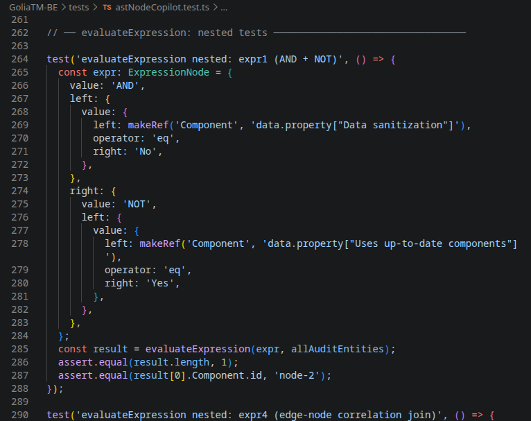

I unit test come rete di sicurezza quando si programma con agenti AI
Ultimamente sto sviluppando Golia, una suite per la sicurezza applicativa e le operazioni offensive, usando un workflow completamente diverso da quello a cui ero abituato. Niente più pair programming, niente più revisioni manuali rigide. Al posto mio c'è un agente AI che scrive codice, refactoring, e feature intere, guidato da opencode in combinazione con LM Studio per l'inferenza locale dei modelli.
Il risultato è sorprendentemente efficace. Ma ha un problema fondamentale: l'AI non ha memoria del contesto. Quando modifica una funzione per aggiungere una feature, non sa che quella stessa funzione era strettamente legata a un'altra logica che non c'entra con la richiesta. E qui entrano in gioco i unit test.
Il contesto: un monorepo complesso
Golia è un monorepo npm con 10 workspace: 4 microservizi backend (Express.js + TypeScript), 4 librerie condivise (Zod schemas, auth utilities, security middleware, UI components), un frontend React e l'infrastruttura Docker. Ogni servizio comunica con MongoDB o MariaDB, gestisce autenticazione OIDC via Keycloak, e ha le proprie route, middleware e servizi.
In un progetto di queste dimensioni, il rischio che un agente AI introduca regressioni è reale. Non perché l'AI sia "brava male" -- il codice che genera è spesso solido -- ma perché non vede il quadro completo. Modifica una funzione di utilità che viene usata in 3 servizi diversi e non sa che quella funzione ha 12 unit test che ne descrivono il comportamento esatto.
La configurazione
Il mio setup si basa su opencode con provider LM Studio locale. Ecco la configurazione che uso in .opencode/opencode.jsonc:
{
"provider": {
"lmstudio": {
"npm": "@ai-sdk/openai-compatible",
"name": "LM Studio (local)",
"options": {
"baseURL": "http://localhost:1234/v1"
},
"models": {
"qwen/qwen3.6-35b-a3b": {
"name": "qwen/qwen3.6-35b-a3b"
},
"qwen/qwen3-coder-next": {
"name": "qwen/qwen3-coder-next"
},
"openai/gpt-oss-120b": {
"name": "openai/gpt-oss-120b"
}
}
}
}
}Uso tre modelli a seconda della complessità della task: qwen3.6-35b per le attività generali, qwen3-coder-next quando serve più precisione nel codice, e gpt-oss-120b per ragionamento complesso. Tutti girano in locale, nessun dato esce dalla mia macchina.
I skill di opencode
La cosa che fa davvero la differenza sono i skill di opencode. Sono file Markdown che definiscono convenzioni, strategie e pattern che l'AI deve seguire quando esegue determinati compiti. Nel progetto ne ho definiti cinque:
- unit-test -- strategia di testing, cosa testare in unit vs e2e, pattern di mocking
- e2e-test -- quando usare Playwright, cosa va testato end-to-end
- build-project -- come avviare e resettare l'ambiente di sviluppo
- domain-errors -- gerarchia errori di dominio, mapping HTTP, testing degli errori
- no-legacy-fallback -- rimuovere codice legacy, normalizzatori dual-format, cast as any
Quando chiedo all'AI di scrivere un test, la skill unit-test viene caricata automaticamente e l'agente sa esattamente quale framework usare, quali pattern seguire e cosa evitare. Senza questa, l'AI avrebbe fatto ipotesi sbagliate su dove mettere i test, come mockare le dipendenze, o che cosa testare.
Ad esempio, la skill specifica esplicitamente che i flussi che richiedono autenticazione reale con Keycloak vanno testati con Playwright e2e, non con unit test. E che mockare il contesto auth con as never è un code smell. Queste sono decisioni architetturali che l'AI non prenderebbe da sola.
Unit test come rete di sicurezza
Ecco il cuore del mio workflow: ogni volta che l'AI modifica del codice, eseguo i test e verifico che tutto passi. Se un test fallisce, significa che il comportamento è cambiato e devo capire se è un cambiamento intenzionale (e quindi aggiorno il test) o una regressione (e quindi correggo il codice).
La codebase usa tre runtime di test:
- node:test -- per utility backend e pure functions
- Vitest -- per frontend React e service API con fetch mock
- supertest -- per middleware integration tests backend
Il pattern più comune è testare funzioni pure con node:test e node:assert/strict. Funzioni senza side-effect, input deterministico → output:
import { test } from 'node:test';
import assert from 'node:assert/strict';
test('strongestRole: admin + user → admin', () => {
assert.equal(strongestRole('admin', 'user'), 'admin');
});
test('strongestRole: null + user → user', () => {
assert.equal(strongestRole(null, 'user'), 'user');
});Poi ci sono i test degli Zod schemas, che verificano ogni campo obbligatorio, optional, limite di lunghezza, regex e coercion. Ogni volta che l'AI modifica uno schema, questi test mi dicono immediatamente se ha rotto qualcosa:
test('createOrganizationSchema: name required', () => {
const result = createOrganizationSchema.safeParse({ alias: 'acme-corp' });
assert.equal(result.success, false);
});
test('createOrganizationSchema: alias too short (2 chars)', () => {
const result = createOrganizationSchema.safeParse({
name: 'Acme',
alias: 'ab',
});
assert.equal(result.success, false);
});
Ma il pattern che trovo più interessante sono gli architecture tests. Questi non testano comportamento -- testano che il codice sorgente rispetti pattern architetturali. Usano readFileSync e regex per verificare cose come l'ordine dei middleware o che certe route siano montate prima di altre:
test('routes/index.ts: org-scoped router uses authenticateToken', () => {
const source = readFileSync(resolve(process.cwd(), 'src/routes/index.ts'), 'utf8');
assert.ok(source.includes('authenticateToken'),
'routes/index.ts must import and use authenticateToken');
});
test('public routes mounted before org middleware', () => {
const source = readFileSync(resolve(__dirname, '../../src/index.ts'), 'utf8');
const lines = source.split('\n');
let publicRoutesLine: number | null = null;
let orgMiddlewareLine: number | null = null;
for (let i = 0; i < lines.length; i++) {
if (lines[i].includes("app.post('/api/v1/auth/organizations')) {
publicRoutesLine = i;
}
if (lines[i].includes("app.use('/api/v1/organization/organizations/:organizationId', authenticateToken")) {
orgMiddlewareLine = i;
}
}
assert.ok(publicRoutesLine! < orgMiddlewareLine!,
`Public routes at line ${publicRoutesLine} must be before org middleware at line ${orgMiddlewareLine}`);
});Questi test sono fondamentali quando si programma con agenti AI: l'AI potrebbe aggiungere un middleware nel posto sbagliato o montare una route pubblica dopo un guard di autenticazione. Gli architecture test catturano questi errori a livello di struttura, non di comportamento.
Cosa non testare in unit test
Una parte importante della strategia è sapere cosa non testare. I unit test sono per logica pura, contract API e rendering UI. Non hanno senso per:
- Auth context wrappers -- mockare il contesto auth OIDC è impraticabile, richiede 30+ proprietà complesse
- Redirect logic -- un if/else su auth state non merita un unit test
- Flussi multi-organizzazione -- richiedono Keycloak reale per testare il token lifecycle
Tutto questo va testato con Playwright e2e, dove si usa un'istanza Keycloak dev per l'autenticazione reale.
Il numero conta
Oggi la codebase ha 80+ file di test con oltre 4.650 righe di codice di test. Il file più lungo è recomputeAuditThreats.test.ts con 987 righe, che testa il motore di ricomputazione dei threat con tutti i suoi edge case: severity preservation, status preservation, note preservation, reference merging, involved assets normalization.
Quando l'AI modifica quel motore, eseguo quei test. Se passano, so che il comportamento è intatto. Se uno fallisce, capisco esattamente cosa è cambiato e valuto se è un miglioramento o un bug. Senza quei test, starei guardando il codice al buio.
Prossimamente: gli e2e test
Il prossimo passo è implementare i test end-to-end con Playwright. La skill e2e-test è già definita e pronta, ma i test veri e propri non sono ancora stati scritti. Copriranno i flussi che attraversano più servizi: login OIDC → creazione organizzazione → gestione subscription, e i flussi del prodotto Threat Modeling.
Quando saranno pronti, farò un post dedicato. Nel frattempo, i unit test sono la mia rete di sicurezza principale e mi danno la fiducia necessaria per continuare a programmare con agenti AI senza perdere il controllo su regressioni sottili.